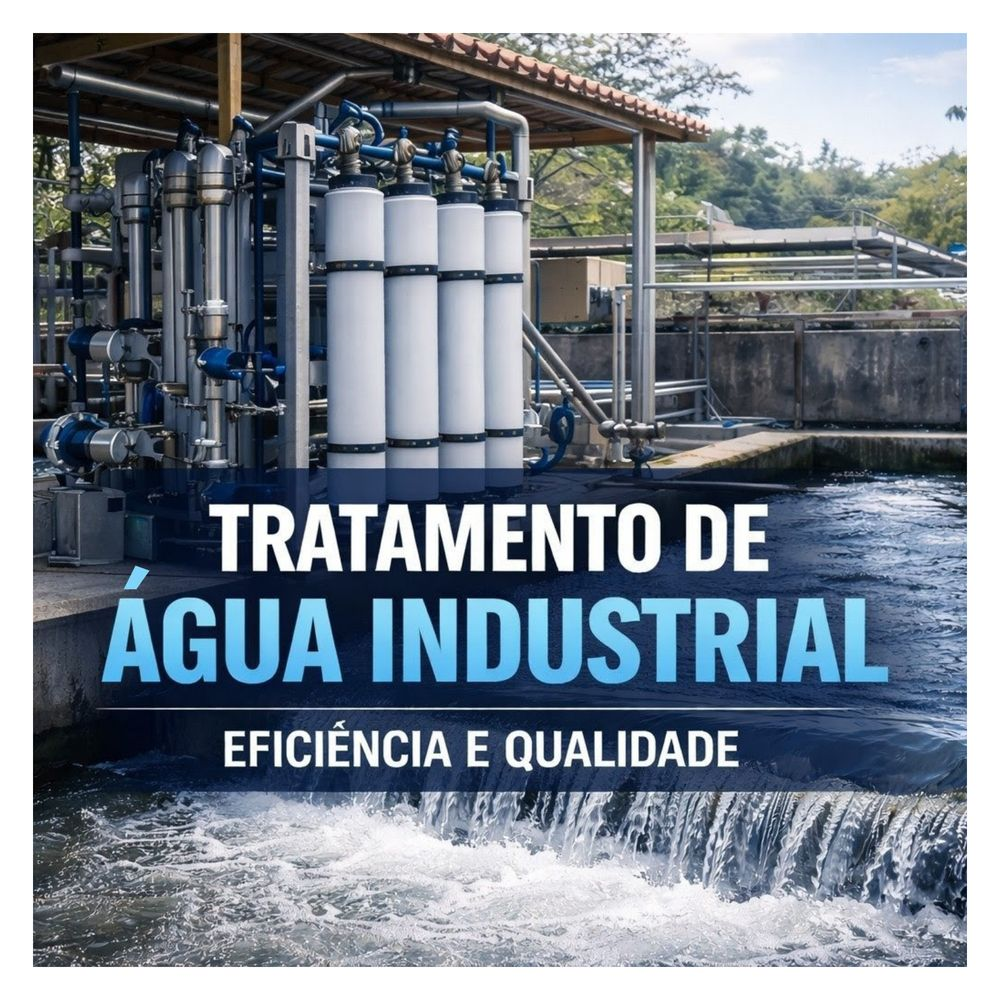

25 anos de soluções em tratamento de água e efluentes para a indústria brasileira.

A PH Águas atua desde 1999 no desenvolvimento, implantação e operação de sistemas para tratamento de água potável, industrial, de processo e efluentes. Nossas soluções abrangem desde diagnóstico técnico até operação continuada.
Com sede em São Bernardo do Campo – SP e atuação em todo território nacional, entregamos projetos para indústrias farmacêuticas, alimentícias, químicas, petroquímicas, têxteis e públicas.
Trabalhamos com membranas, válvulas e componentes de tratamento das principais tecnologias disponíveis no mercado, oferecendo garantia técnica e suporte pós-venda em cada projeto.
Os princípios que guiam cada projeto e cada relacionamento com nossos clientes.
Prover soluções técnicas inovadoras e confiáveis em tratamento de água e efluentes, contribuindo para a sustentabilidade industrial e a qualidade de vida das comunidades, com responsabilidade ambiental e excelência de serviço.
Ser reconhecida como referência nacional em soluções integradas de tratamento de água, sendo a primeira escolha para empresas que buscam qualidade, confiabilidade e parceria técnica de longo prazo.
Mais de duas décadas construindo confiança junto à indústria brasileira.
O que nos diferencia em cada projeto entregue.
Nossa equipe analisa seu processo e apresenta a melhor solução em até 48 horas.